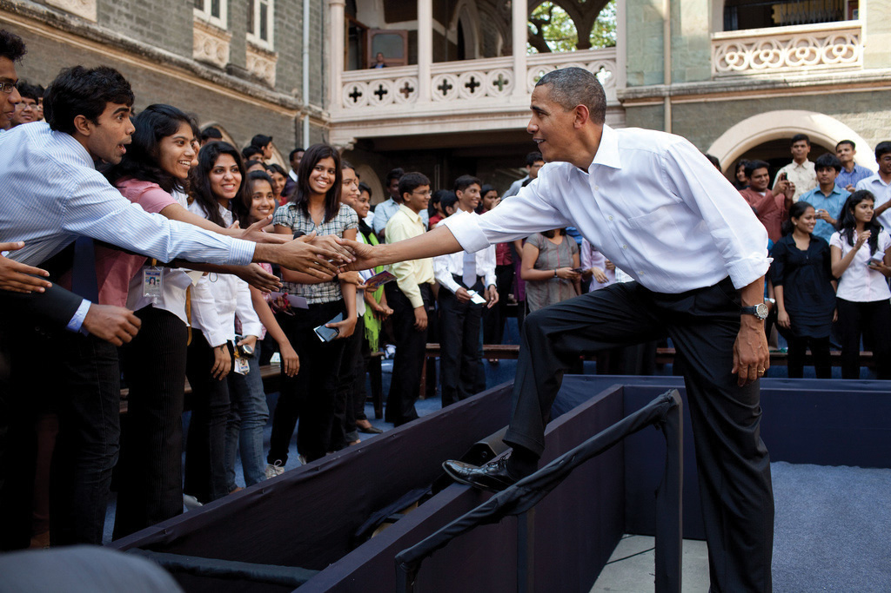
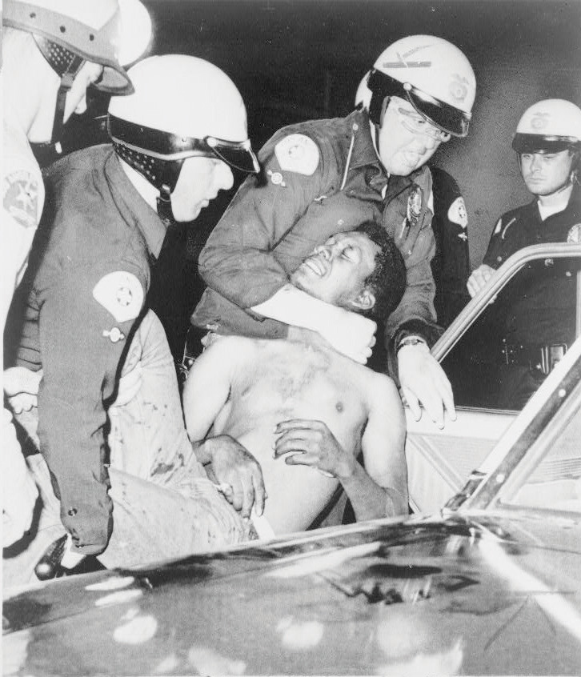

After reading this section, you should be able to answer the following questions:
Americans have many options for taking part in politics, including voting, contacting public officials, campaigning, running for and holding office, protesting, and volunteering. Voting is the most prominent form of political participation. Voter registration and turnout is influenced by legal and structural factors, voter qualifications, the type of election, and voters’ enthusiasm about a particular campaign.
Political participationActions directed explicitly toward influencing the distribution of social goods and values. is action that influences the distribution of social goods and values.Steven J. Rosenstone and John Mark Hansen, Mobilization, Participation, and Democracy in America (New York: Macmillan, 1993), 4. People can vote for representatives, who make policies that will determine how much they have to pay in taxes and who will benefit from social programs. They can take part in organizations that work to directly influence policies made by government officials. They can communicate their interests, preferences, and needs to government by engaging in public debate.Sidney Verba, Kay Lehman Schlozman, and Henry E. Brady, Voice and Equality: Civic Voluntarism in American Politics (Cambridge, MA: Harvard University Press, 1995). Such political activities can support government officials, institutions, and policies, or aim to change them.
Far more people participate in politics by voting than by any other means. Yet there are many other ways to take part in politics that involve varying amounts of skill, time, and resources. People can work in an election campaign, contact public officials, circulate a petition, join a political organization, and donate money to a candidate or a cause. Serving on a local governing or school board, volunteering in the community, and running for office are forms of participation that require significant time and energy. Organizing a demonstration, protesting, and even rioting are other forms of participation.Lester W. Milbrath and M. L. Goel, Political Participation, 2nd ed. (Chicago: Rand McNally, 1977).
People also can take part in support activitiesPassive forms of politics involvement, such as attending a concert on behalf of a cause., more passive forms of political involvement. They may attend concerts or participate in sporting events associated with causes, such as the “Race for the Cure” for breast cancer. These events are designed to raise money and awareness of societal problems, such as poverty and health care. However, most participants are not activists for these causes. Support activities can lead to active participation, as people learn about issues through these events and decide to become involved.
People also can engage in symbolic participationRoutine or habitual acts that show support for or dissatisfaction with the political system., routine or habitual acts that show support for the political system. People salute the flag and recite the pledge of allegiance at the beginning of a school day, and they sing the national anthem at sporting events. Symbolic acts are not always supportive of the political system. Some people may refuse to say the pledge of allegiance to express their dissatisfaction with government. Citizens can show their unhappiness with leadership choices by the symbolic act of not voting.
For many people, voting is the primary means of taking part in politics. A unique and special political act, voting allows for the views of more people to be represented than any other activity. Every citizen gets one vote that counts equally. Over 90 percent of Americans agree with the principle that citizens have a duty to vote.William H. Flanigan and Nancy H. Zingale, Political Behavior of the American Electorate, 9th ed. (Washington, DC: CQ Press, 1999). Still, many people do not vote regularly.
Registered voters meet eligibility requirements and have filed the necessary paperwork that permits them to vote in a given locality. In addition to the requirement that voters must be eighteen years of age, states can enforce residency requirements that mandate the number of years a person must live in a place before being eligible to vote. A large majority of people who have registered to vote participate in presidential elections.
The composition of the electorate has changed radically throughout American history. The pool of eligible voters has expanded from primarily white, male property owners at the founding to include black men after the Civil War, women after 1920, and eighteen- to twenty-year-olds after 1971. The eligible electorate in the 1800s, when voter turnout consistently exceeded 70 percent, was far different than the diverse pool of eligible voters today.
Social, cultural, and economic factors can keep people from voting. Some barriers to voting are informal. The United States holds a large number of elections, and each is governed by specific rules and schedules. With so many elections, people can become overwhelmed, confused, or just plain tired of voting.
Other barriers are structural. Voter registration laws were implemented in the 1860s by states and big cities to ensure that only citizens who met legal requirements could vote. Residency requirements limited access to registration offices. Closing voting rosters weeks or months in advance of elections effectively disenfranchised voters. Over time, residency requirements were relaxed. Beginning in the 1980s, some states, including Maine, Minnesota, and Wisconsin, made it possible for people to register on Election Day. Turnout in states that have Election Day registration averages ten points higher than in the rest of the country.Raymond E. Wolfinger and Steven J. Rosenstone, Who Votes? (New Haven, CT: Yale University Press, 1980).
The United States is one of the few democracies that requires citizens to register themselves rather than having the government take responsibility for automatically registering them. Significant steps have been taken to make registration easier. In 1993, Congress passed the National Voter Registration ActA law that allows citizens to register to vote at motor vehicle and social services offices; also known as the “motor voter” law., also known as the “motor voter” law, allowing citizens to register at motor vehicle and social service offices. “Motor voter’s” success in increasing the ranks of registered voters differs by state depending on how well the program is publicized and executed.
Voter registration also has been assisted by online registration. In most cases, individuals must download the form, sign it, and mail it in. Rock the Vote (RTV), a nonpartisan youth mobilization organization, established the first online voter registration initiative in 1992 with official backing from the Congressional Internet Caucus. RTV registered over 2 million new voters in 1992, 80 percent of whom cast a ballot, and signed up over 2.5 million voters in 2008.“The Campaign: Rockers and Rappers,” The Economist, June 20, 1993, 25. Following the 2008 election, RTV lobbied the Obama administration to institute fully automated online voter registration nationally.
In all states except Maine, Vermont, and Massachusetts, inmates serving time for committing felonies lose their right to vote. At least ten states prohibit former felons from voting even after they have served their time. States argue that their legal authority to deny convicted felons voting rights derives from the Fourteenth Amendment, which stipulates that voting rights of individuals guilty of “participation in rebellion, or other crime” can be denied. This practice excludes almost 4 million people from the voting rolls.Human Rights Watch and the Sentencing Project, Losing the Vote: The Impact of Felony Disenfranchisement Laws (New York: Human Rights Watch, 2000).
Opinions are divided on this issue. Some people believe that individuals who have committed a serious crime should be deprived of the privileges enjoyed by law-abiding people. Others contend that the integrity of the democratic process is at stake and that individuals should not be denied a fundamental right once they have served their time.
Voter turnout depends on the type of election. A large number of elections are held in the United States every year, including local elections, elections for county and statewide offices, primaries, and general elections. Only a small number of people, generally under one-quarter of those eligible, participate in local, county, and state elections. Midterm elections, in which members of Congress run for office in nonpresidential-election years, normally draw about one-third of eligible voters.Steven J. Rosenstone and John Mark Hansen, Mobilization, Participation, and Democracy in America (New York: Macmillan Publishing Company, 1993), 1. Voter turnout in presidential elections is generally higher than for lower-level contests; usually more than half the eligible voters cast a ballot.
Much is made about low levels of voter turnout for presidential elections in the current era. However, there have not been great fluctuations in turnout since the institution of universal suffrage in 1920. Forty-nine percent of the voting-age public cast a ballot in the 1924 presidential contest, the same percentage as in 1996. Turnout in presidential elections in the 1960s was over 60 percent. More voters were mobilized during this period of political upheaval in which people focused on issues of race relations, social welfare, and the Vietnam War.Frances Fox Piven and Richard A. Cloward, Why Americans Still Don’t Vote (Boston: Beacon Press, 2000). Turnout was lower in the 1980s and 1990s, when the political climate was less tumultuous. There has been a steady increase in turnout since the 2000 presidential election, in which 51 percent of the voting-age public cast a ballot. Turnout was 55 percent in 2004 and 57 percent in 2008, when 132,618,580 people went to the polls.Michael McDonald, “Voter Turnout,” United States Election Project, http://elections.gmu.edu/voter_turnout.htm.
Turnout varies significantly across localities. Some regions have an established culture of political participation. Local elections in small towns in New England draw up to 80 percent of qualified voters. Over 70 percent of Minnesota voters cast ballots in the 2008 presidential election compared with 51 percent in Hawaii and West Virginia.Michael McDonald, “Voter Turnout,” United States Election Project, http://elections.gmu.edu/voter_turnout.htm.
Turnout figures can be skewed by undercounting the vote. This problem gained attention during the 2000 election. The contested vote in the Florida presidential race resulted in a recount in several counties. Ballots can be invalidated if they are not properly marked by voters or are not read by antiquated voting machines. Political scientists have determined that presidential election turnout is underestimated on average by 4 percent, which translates into hundreds of thousands of votes.William H. Flanigan and Nancy H. Zingale, Political Behavior of the American Electorate, 9th ed. (Washington, DC: CQ Press, 1999).
Voters in midterm elections choose all the members of the US House of Representatives and one-third of the Senate, along with office holders at the state and local levels. Voter turnout levels have hovered around 40 percent in the past three midterm elections. Turnout for the 2010 midterm election was 41.6 percent, compared with 41.4 percent in 2006 and 40.5 percent in 2002.Michael McDonald, “Voter Turnout,” United States Election Project, http://elections.gmu.edu/voter_turnout.htm. Young voters are less likely to turn out in midterm elections than older citizens. In 2010, only about 23 percent of eligible eighteen- to twenty-nine-year-olds cast a ballot.Center for Information & Research on Civic Learning and Engagement (CIRCLE), “Young Voters in the 2010 Elections,” http://www.civicyouth.org/wp-content/uploads/2010/11/2010-Exit-Poll-FS-Nov-17-Update.pdf. The United States Election Project provides information about voter turnout in presidential campaigns.
People have many options for engaging in politics. People can act alone by writing letters to members of Congress or staging acts of civil disobedienceDeliberate, nonviolent violation of laws that people consider to be unjust, committed in order to draw attention to a cause.. Some political activities, such as boycotts and protest movements, involve many people working together to attract the attention of public officials. Increasingly people are participating in politics via the media, especially the Internet.
Expressing opinions about leaders, issues, and policies has become one of the most prominent forms of political participation. The number of people contacting public officials at all levels of government has risen markedly over the past three decades. Seventeen percent of Americans contacted a public official in 1976. By 2008, 44 percent of the public had contacted their member of Congress about an issue or concern.Congressional Management Foundation, Communicating with Congress: How the Internet Has Changed Citizen Engagement (Washington, DC: Congressional Management Foundation, 2008). E-mail has made contacting public officials cheaper and easier than the traditional method of mailing a letter.
Students interning for public officials soon learn that answering constituent mail is one of the most time-consuming staff jobs. Every day, millions of people voice their opinions to members of Congress. The Senate alone receives an average of over four million e-mail messages per week and more than two hundred million e-mail messages per year.Congressional Management Foundation, Communicating With Congress: How the Internet Has Changed Citizen Engagement (Washington, DC: Congressional Management Foundation, 2008). Still, e-mail may not be the most effective way of getting a message across because office holders believe that an e-mail message takes less time, effort, and thought than a traditional letter. Leaders frequently are “spammed” with mass e-mails that are not from their constituents. Letters and phone calls almost always receive some kind of a response from members of Congress.
The number of people who give money to a candidate, party, or political organization has increased substantially since the 1960s. Over 25 percent of the public gave money to a cause and 17 percent contributed to a presidential candidate in 2008.Pew Research Center for the People and the Press, “Pew Research Center for the People & the Press Re-Interview Poll, Nov, 2008,” Poll Database, http://people-press.org/questions/?qid=1720790&pid=51&ccid=51#top. Direct mail and e-mail solicitations make fundraising easier, especially when donors can contribute through candidate and political-party websites. A positive side effect of fundraising campaigns is that people are made aware of candidates and issues through appeals for money.Gary C. Jacobson, The Politics of Congressional Elections (New York: HarperCollins, 1997).
Americans are more likely to make a financial contribution to a cause or a candidate than to donate their time. As one would expect, those with higher levels of education and income are the most likely to contribute. Those who give money are more likely to gain access to candidates when they are in office.
In addition to voting, people engage in a range of activities during campaigns. They work for political parties or candidates, organize campaign events, and discuss issues with family and friends. Generally, about 15 percent of Americans participate in these types of campaign activities in an election year.Sidney Verba, Kay Lehman Schlozman, and Henry E. Brady, Voice and Equality: Civic Voluntarism in American Politics (Cambridge, MA: Harvard University Press, 1995), 70.
New media offer additional opportunities for people to engage in campaigns. People can blog or participate in discussion groups related to an election. They can create and post videos on behalf of or opposed to candidates. They can use social networking sites, like Facebook, to recruit supporters, enlist volunteers for campaign events, or encourage friends to donate money to a candidate.
Figure 8.5
Participation in the 2008 presidential election was greater than usual, as people were motivated by the open race and the candidate choices.
Source: Photo courtesy of the White House Photo (Pete Souza), http://commons.wikimedia.org/wiki/File:Obama_greets_students_following_a_town_hall _meeting_at_St._Xavier_College.jpg.
The 2008 presidential election sparked high levels of public interest and engagement. The race was open, as there was no incumbent candidate, and voters felt they had an opportunity to make a difference. Democrat Barack Obama, the first African American to be nominated by a major party, generated enthusiasm, especially among young people. In addition to traditional forms of campaign activity, like attending campaign rallies and displaying yard signs, the Internet provided a gateway to involvement for 55 percent of Americans.Diana Owen, “The Campaign and the Media,” in The American Elections of 2008, ed. Janet M. Box-Steffensmeier and Steven E. Schier (Lanham, MD: Rowman & Littlefield, 2009), 9–32. Young people, in particular, used social media, like Facebook, to organize online on behalf of candidates. Students advertised campus election events on social media sites, such as candidate rallies and voter registration drives, which drew large crowds.
Being a public official requires a great deal of dedication, time, energy, and money. About 3 percent of the adult population holds an elected or appointed public office.Sidney Verba, Kay Lehman Schlozman, and Henry E. Brady, Voice and Equality: Civic Voluntarism in American Politics (Cambridge, MA: Harvard University Press, 1995), 51–52. Although the percentage of people running for and holding public office appears small, there are many opportunities to serve in government.
Potential candidates for public office must gather signatures on a petition before their names can appear on the ballot. Some people may be discouraged from running because the signature requirement seems daunting. For example, running for mayor of New York City requires 7,500 signatures and addresses on a petition. Once a candidate gets on the ballot, she must organize a campaign, solicit volunteers, raise funds, and garner press coverage.
Protests involve unconventional, and sometimes unlawful, political actions that are undertaken in order to gain rewards from the political and economic system. Protest behavior can take many forms. People can engage in nonviolent acts of civil disobedience where they deliberately break a law that they consider to be unjust.Michael Lipsky, “Protest as a Political Resource,” American Political Science Review, December 1968, 1145. This tactic was used effectively during the 1960s civil rights movementA social movement begun in the 1950s to combat discrimination against African Americans. when African Americans sat in whites-only sections of public busses. Other forms of protest behavior include marking public spaces with graffiti, demonstrating, and boycotting. Extreme forms of protest behavior include acts that cause harm, such as when environmental activists place spikes in trees that can seriously injure loggers, terrorist acts, like bombing a building, and civil war.
Figure 8.6 The Watts Riots
The Watts riots in 1965 were the first of a number of civil disturbances in American cities. Although its participants thought of them as political protests, the news media presentation rarely gave that point of view.
Source: Photo courtesy of New York World-Telegram, http://commons.wikimedia.org/wiki/File:Wattsriots-policearrest-loc.jpg.
Extreme discontent with a particular societal condition can lead to rioting. Riots are frequently spontaneous and are sparked by an incident that brings to a head deep-seated frustrations and emotions. Members of social movements may resort to rioting when they perceive that there are no conventional alternatives for getting their message across. Riots can result in destruction of property, looting, physical harm, and even death. Racial tensions sparked by a video of police beating Rodney King in 1991 and the subsequent acquittal of the officers at trial resulted in the worst riots ever experienced in Los Angeles.
The Rodney King Video
In March 1991, KTLA News at Ten in Los Angeles interrupted programming to broadcast an eighty-one-second amateur videotape of several police officers savagely beating black motorist Rodney King as he stood next to his vehicle. A nineteen-second edit of the tape depicted the most brutal police actions and became one of the most heavily broadcast images in television news history. The original and the edited tape tell two different stories of the same event.
Viewing the entire tape, one would have seen a belligerent and violent Rodney King who was difficult for police to constrain. Not filmed at all was an intoxicated King driving erratically, leading police on an eight-mile, high-speed chase through crowded streets.
The edited video showing the beating of King told a different story of police brutality and was the basis of much controversy. Race relations in Los Angeles in 1991 were strained. The tape enraged blacks in Los Angeles who saw the police actions as being widespread within the Los Angeles Police Department and not an isolated incident.
Four white officers were tried in criminal court for the use of excessive force, and they were acquitted of all but one charge. Jurors were shown the entire tape, not just the famous nineteen-second clip. Soon after the verdict was announced, riots broke out. Demonstrators burned buildings and assaulted bystanders. Fifty-four people were killed and two thousand were wounded. Property damage was in the millions of dollars.
The video of the beating of Rodney King in Los Angeles in 1991 sparked riots.
Source: Used with permission from AP Photo/Mark J. Terill (top) and AP Photo/Nick Ut (bottom).
CBS News Report on the Rodney King Incident
The CBS News report on the Rodney King incident included the following controversial video.
LA Riots of 1992: Rodney King Speaks
(click to see video)The following video is the CNN News Report on the Los Angeles Riots, including Rodney King’s appeal to stop the violence.
College students in the 1960s used demonstrations to voice their opposition to the Vietnam War. Today, students demonstrate to draw attention to causes. They make use of new communications technologies to organize protests by forming groups on the Internet. Online strategies have been used to organize demonstrations against the globalization policies of the World Trade Organization and the World Bank. Over two hundred websites were established to rally support for protests in Seattle, Washington; Washington, DC; Quebec City, Canada; and other locations. Protest participants received online instructions at the protest site about travel and housing, where to assemble, and how to behave if arrested. Extensive e-mail listservs keep protestors and sympathizers in contact between demonstrations. Twitter, a social messaging platform that allows people to provide short updates in real time, has been used to convey eyewitness reports of protests worldwide. Americans followed the riots surrounding the contested presidential election in Iran in 2009 on Twitter, as observers posted unfiltered, graphic details as the violent event unfolded.
About half the population takes part in national and community political affairs by joining an interest group, issue-based organization, civic organization, or political party. Organizations with the goal of promoting civic action on behalf of particular causes, or single-issue groupsOrganizations with the goal of promoting action on behalf of particular causes., have proliferated. These groups are as diverse as the People for the Ethical Treatment of Animals (PETA), which supports animal rights, the Concord Coalition, which seeks to protect Social Security benefits, and the Aryan Nation, which promotes white supremacy.
There are many ways to advocate for a cause. Members may engage in lobbying efforts and take part in demonstrations to publicize their concerns. They can post their views on blogs and energize their supporters using Facebook groups that provide information about how to get involved. Up to 70 percent of members of single-issue groups show their support solely by making monetary contributions.Robert D. Putnam, Bowling Alone: America’s Declining Social Capital (New York: Simon & Schuster, 2000).
Even activities that on the surface do not seem to have much to do with politics can be a form of political participation. Many people take part in neighborhood, school, and religious associations. They act to benefit their communities without monetary compensation.
Maybe you coach a little league team, visit seniors at a nursing home, or work at a homeless shelter. If so, you are taking part in civil societyThe community of individuals who volunteer and work cooperatively outside of formal governmental institutions., the community of individuals who volunteer and work cooperatively outside of formal governmental institutions.Don E. Eberly, America’s Promise: Civil Society and the Renewal of American Culture (Lanham, MD: Rowman & Littlefield, 1998). Civil society depends on social networksAssociations of friends and acquaintances, based on trust and goodwill, that are able to work together to achieve common goals., based on trust and goodwill, that form between friends and associates and allow them to work together to achieve common goals. Community activism is thriving among young people who realize the importance of service that directly assists others. Almost 70 percent of high school students and young adults aged eighteen to thirty report that they have been involved in community activities.Peter D. Hart Research Associates, New Leadership for a New Century (Washington, DC: Public Allies, August 28, 1998).
There are many different ways that Americans can participate in politics, including voting, joining political parties, volunteering, contacting public officials, contributing money, working in campaigns, holding public office, protesting, and rioting. Voting is the most prevalent form of political participation, although many eligible voters do not turn out in elections. People can take part in social movements in which large groups of individuals with shared goals work together to influence government policies. New media provide novel opportunities for political participation, such as using Facebook to campaign for a candidate and Twitter to keep people abreast of a protest movement.